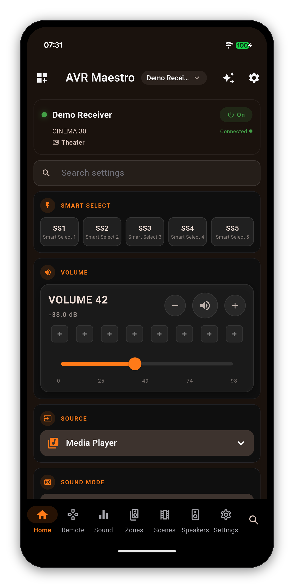
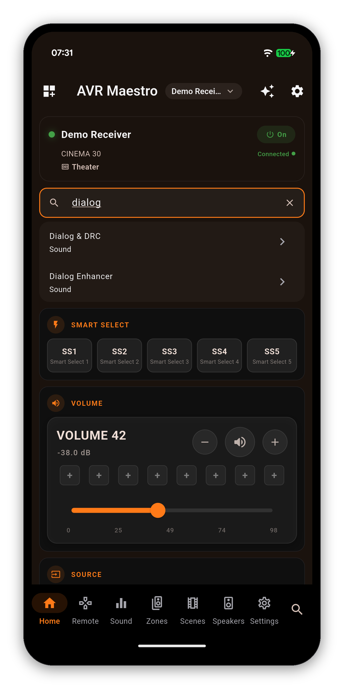
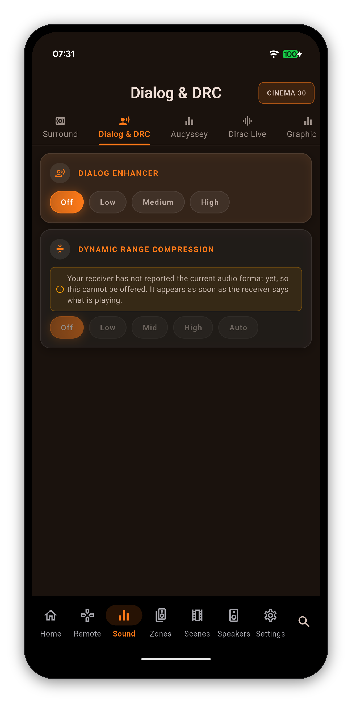
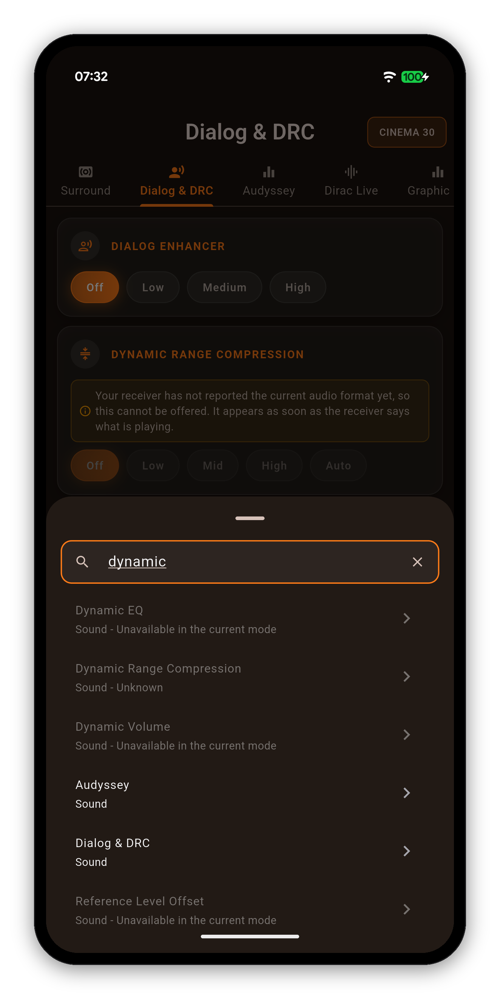

A receiver hides hundreds of settings behind tabs, sub-tabs and menus. Type a few letters of the one you want, tap the result, and AVR Maestro opens the right page, scrolls to the setting and flashes it so you can see where it is.




Search asks the connected receiver what it can do, so a setting your chassis does not have is never listed. Switch to another receiver and the results change with it, without retyping.
A setting the receiver has but cannot change right now is shown dimmed with the reason underneath, for example that the current sound mode locks it. A setting the receiver has not reported yet reads Unknown. The app never turns "not answered yet" into "not available".
Search works in all of the app's languages. Accents, umlauts, the Turkish dotted and dotless i, full-width letters, Arabic vowel marks and Hebrew points do not have to be typed. The English name of a setting also finds it in any language, listed after the matches in your own language, because the receiver's own menus and manual use English terms.
Getting started · Manage receivers · Navigating the app · Home Screen · Volume Controls · Remote · Zones · Now Playing & HEOS · Radio (FM/AM) · Scenes · Sound · Graphic EQ · Speakers · Why a control is locked · Settings · Widgets · Custom Icons · On-Screen Display · Languages · The Assistant · Home Automation · Home Assistant dashboard · Backup & Restore · Glossary